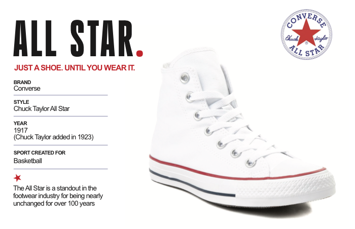
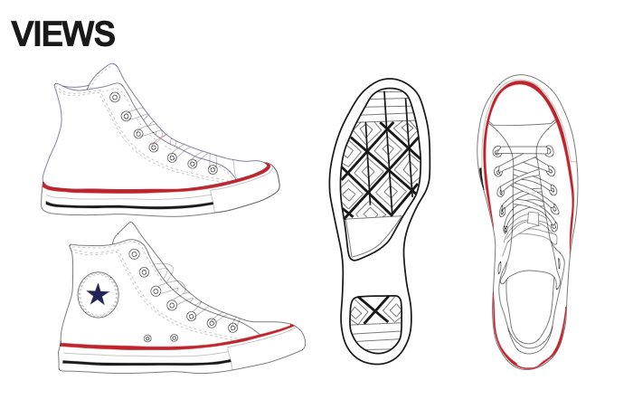
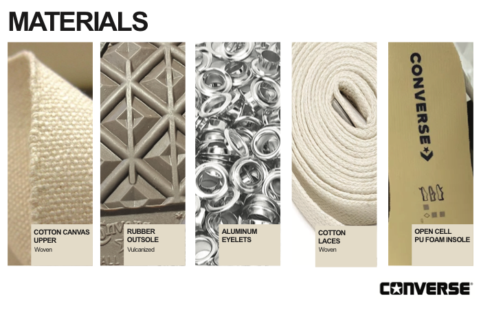
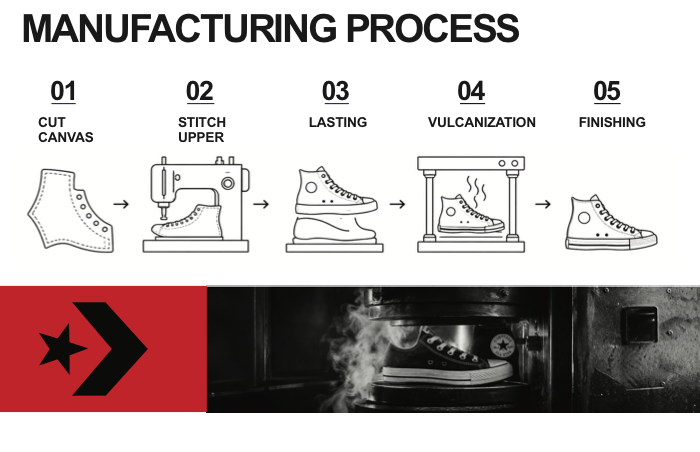
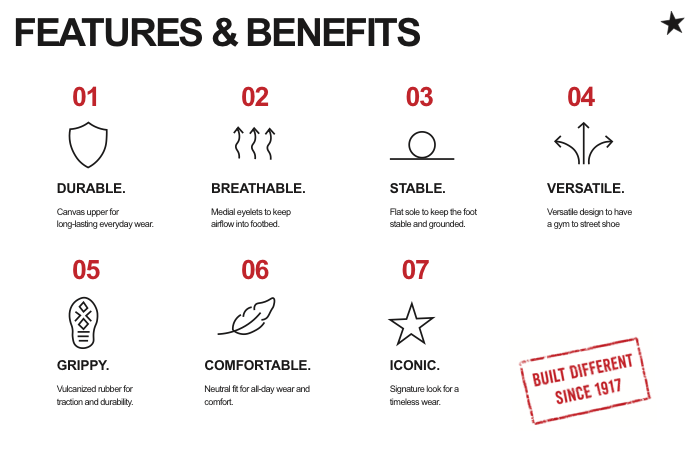
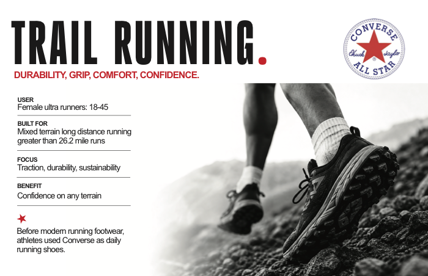
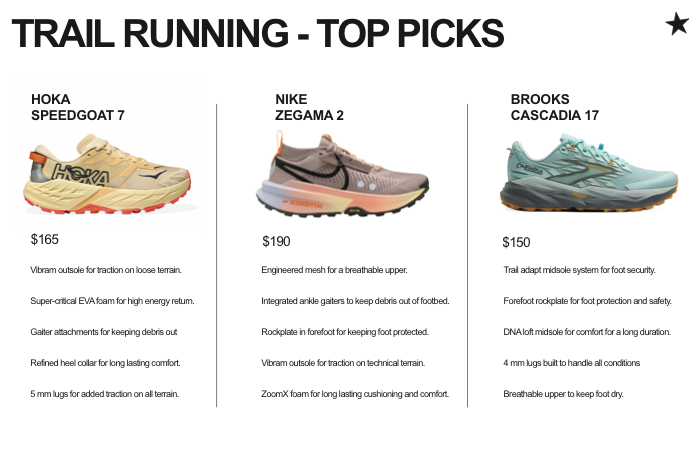

Footwear / Heritage Reimagined / Trail Running
Converse All Star x Trail Running [in progress]
BrandConverse
ModelChuck Taylor All Star
Timeline4 weeks
ScopeConcept to physical shoe prototype
StatusIn progress
This in-progress footwear concept reimagines the Converse Chuck Taylor All Star through a trail running lens.
The project explores how a shoe that has remained culturally recognizable for more than 100 years can shift from court heritage toward trail function through material, sport, and performance updates.
Process Deck
From court to trail







